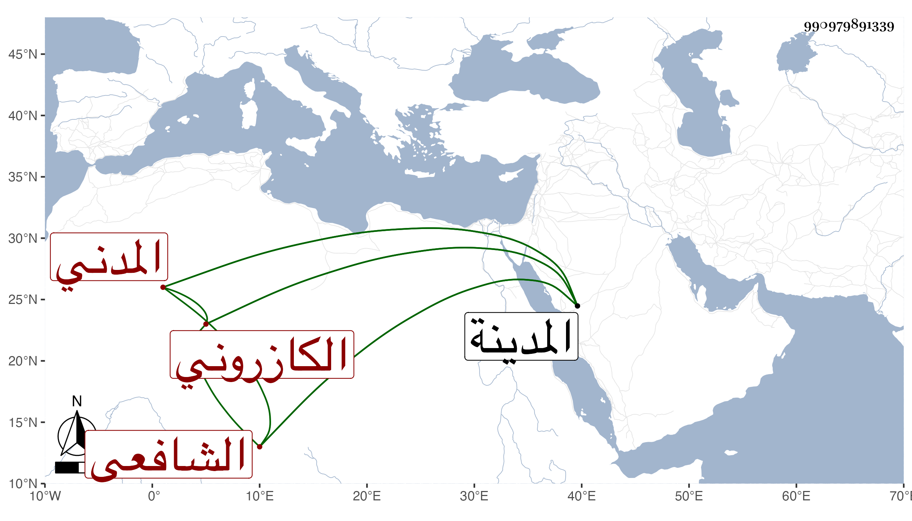

0902Sakhawi.DawLamic.ITO20230111-ara1.EIS1600.990979891339
Biography ID: 990979891339
734
محمد بن محمد بن محمد بن محمد بن عبد السلام بن محمد بن روزبة الشمس الملقب بالمقبول ابن الشمس بن الشيخ فتح الدين أبي الفتح بن تقي الكازروني المدني الشافعي الماضي أخوه أحمد وذاك الأكبر وأبوهما ويعرف كسلفه بابن تقي . ولد في رمضان سنة إحدى وسبعين ونشأ فحفظ القرآن وأربعي النووي والحاوي والمنهاج الأصلي وألفية النحو وعرض على جماعة وسمع على جده أبي الفتح وأبي الفرج المراغي والشهاب الأبشيطي ثم حسين الفتحي والبدر حسن المرجاني والقاضي المحيوي الحنبلي واشتغل بالفقه والعربية وغيرهما ومن شيوخه الشمس البلبيسي أخذ عنه الفقه وأصوله والعربية والفرائض والحساب وبه انتفع وكذا أخذ في الفقه عن السيد السمهودي وأخذ أيضا قليلا عن التقي بن قاضي عجلون حين اجتيازه للحج وقرأ البخاري على النور بن قريبة المحلي حين إقامته بالمدرسة المزهرية وحضر عنده غير ذلك بل لحضر قبل عند الشرف عبد الحق السنباطي وعرض عليه بعض محافيظه وبعد على أبي الفضل بن الإمام الدمشقي ولازم الشمس البسكري في العربية وسمع مني في المجاورة الأولى بالمدينة ثم لازمني في الثانية حتى قرأ الشفا والموطأ وغيرهما وسمع الكثير بحثا من شرحي على الألفية والتقريب وكتب بخطه المقاصد الحسنة ، وهو من خيار فضلاء المدينة مع حسن فهم ومشاركة سيما في الفقه .
